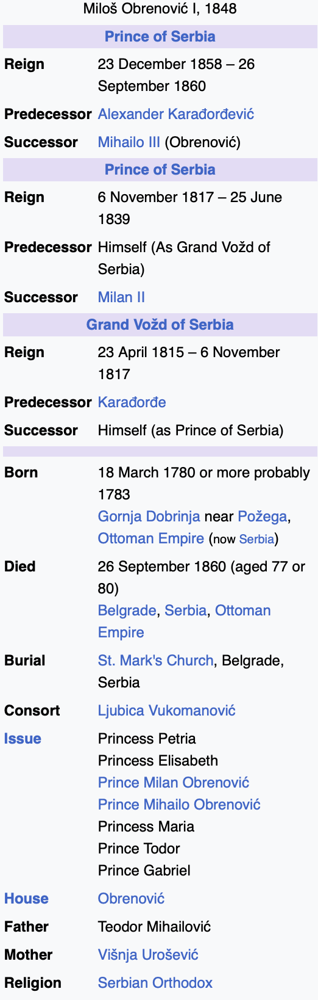

Q1:Who was the Prince of Serbia in 1857 before Miloš Obrenovic ́ I?
A1: Alexander Karadordevic ́
Q2: How many years before his death did Miloš Obrenovic ́ I begin his second reign as the Prince of Serbia?
A2: 2 years
Q3: How long after Miloš Obrenovic ́’s reign as Grand Vožd of Serbia ended did his second reign as Prince of Serbia begin?
A3: 41 years
Q4: How many years elapsed between reigns of Prince of Serbia for Miloš Obrenovic ́ I?
A4: 19 years
Q5:Who was the Prince of Serbia in 1840?
A5: Milan II